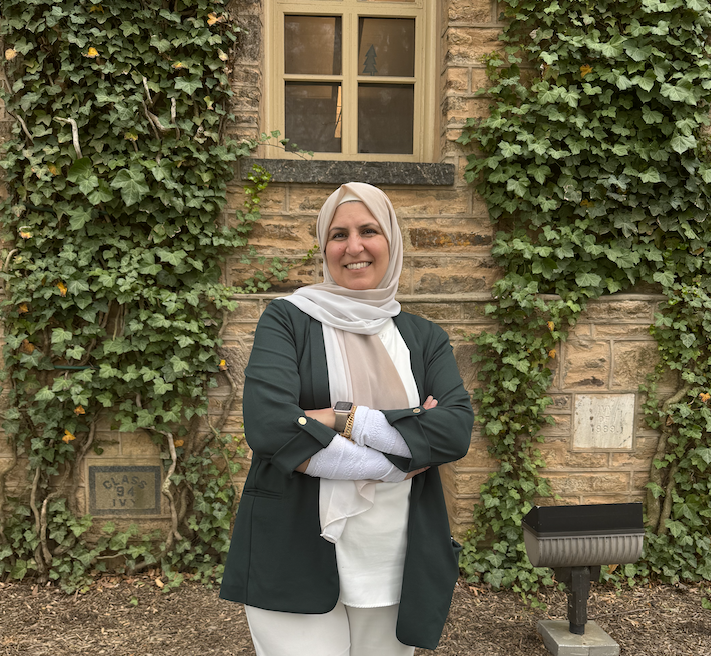

Welcome to Algebra 2!
Here, you can find our class schedule, assignment updates, helpful resources, and everything you need to stay on track - whether you're in class or catching up from home.
About Me!

Hello everyone! My name is Mrs. Akil and I am so excited to be your teacher this year! I graduated from the University of Michigan and earned my bachelor’s degree in applied mathematics and statistics. I have taught at many schools including John Glenn High School, Fordson High School, STAR International Academy, WISE academy, and Lowrey Middle School. However, I've been happy to call Crestwood my home for the past four years. Beyond being a math teacher, I am a mom to 4 amazing kids with my youngest about to graduate high school and my oldest about to get his PhD from the University of Michigan Ann Arbor. I love watching TV with Criminal Minds being my favorite show. Let's make this the best year yet!
Hello everyone! My name is Mrs. Akil and I am so excited to be your teacher this year! I graduated from the University of Michigan and earned my bachelor’s degree in applied mathematics and statistics. I have taught at many schools including John Glenn High School, Fordson High School, STAR International Academy, WISE academy, and Lowrey Middle School. However, I've been happy to call Crestwood my home for the past four years. Beyond being a math teacher, I am a mom to 4 amazing kids with my youngest about to graduate high school and my oldest about to get his PhD from the University of Michigan Ann Arbor. I love watching TV with Criminal Minds being my favorite show. Let's make this the best year yet!